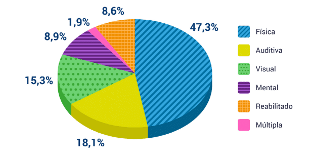

A Importância da Acessibilidade no Cotidiano: Um Direito Fundamental
Pessoas com deficiência representam 8,9% da população brasileira, totalizando mais de 18,6 milhões de indivíduos.
Essa diversificada categoria abrange deficiências visual, auditiva, física e mental.
Em comparação com a população sem deficiência, as PcD enfrentam obstáculos adicionais em
suas atividades diárias. Para promover a inclusão, é crucial garantir acessibilidade no
ambiente físico e digital. Investir em acessibilidade não apenas atende aos direitos
fundamentais, mas também contribui para uma sociedade mais diversa, respeitosa e igualitária.

Descrição de Imagem: Gráfico de Distribuição por Tipo de Deficiência – Brasil, 2018.
Viver em uma sociedade inclusiva é um direito fundamental que todos devemos defender e promover. A acessibilidade no cotidiano desempenha um papel crucial nesse cenário, pois influencia diretamente a participação plena e igualitária de todos os cidadãos. Quando falamos de acessibilidade, referimo-nos não apenas a adaptações físicas, mas também a uma mudança cultural que reconhece e respeita a diversidade de habilidades.
A acessibilidade no cotidiano abrange uma ampla gama de áreas, desde espaços públicos até serviços essenciais. Calçadas adequadas, sinalização acessível, transporte inclusivo e comunicação adaptada são apenas alguns dos elementos que contribuem para a construção de um ambiente cotidiano acessível a todos.
Além de ser uma questão de direitos humanos, a acessibilidade é essencial para o desenvolvimento de uma sociedade mais rica e dinâmica. Ao remover barreiras físicas e sociais, criamos oportunidades iguais para que pessoas com diferentes habilidades possam contribuir ativamente para a comunidade. Isso não apenas enriquece a diversidade de perspectivas, mas também impulsiona a inovação e a criatividade em todos os setores da sociedade.
Em um mundo cada vez mais interconectado, a acessibilidade no cotidiano também se estende ao ambiente digital. Garantir que as plataformas online, serviços e informações sejam acessíveis a todos é parte integrante dessa busca por inclusão. A tecnologia, quando utilizada corretamente, pode ser uma ferramenta poderosa para eliminar barreiras e proporcionar oportunidades igualitárias.
Portanto, defender e promover a acessibilidade no cotidiano não é apenas uma responsabilidade ética, mas uma necessidade para construirmos um mundo mais equitativo e justo. Ao reconhecer e abraçar a diversidade de habilidades em nossa sociedade, estamos investindo no fortalecimento da coletividade e na criação de um ambiente onde todos possam prosperar. Acessibilidade no cotidiano não é apenas um direito fundamental; é a base para uma sociedade mais inclusiva e compassiva.